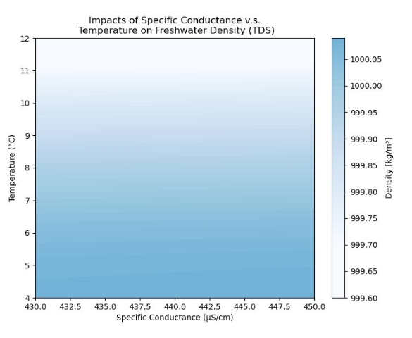
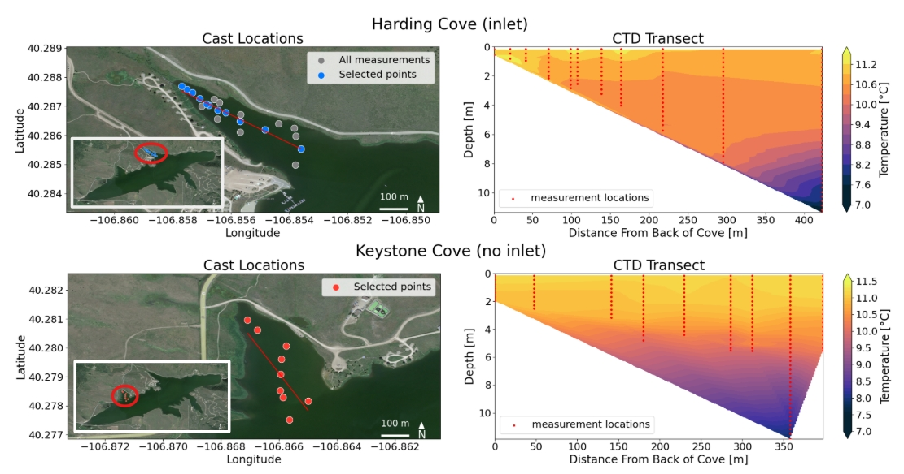
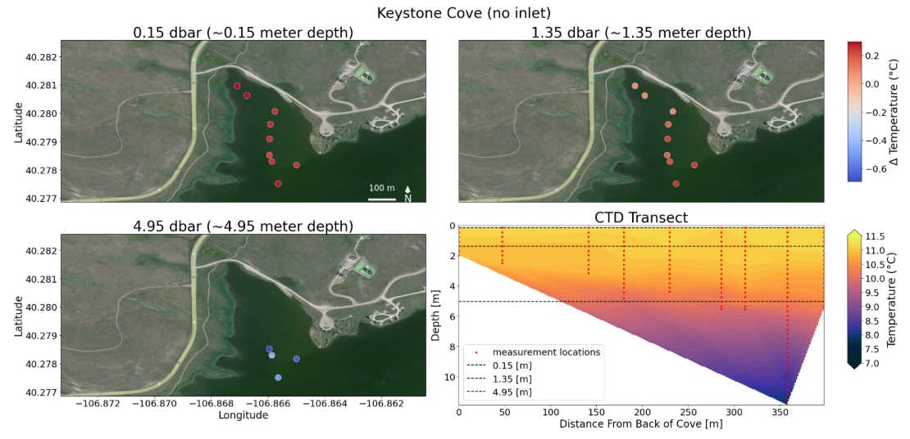
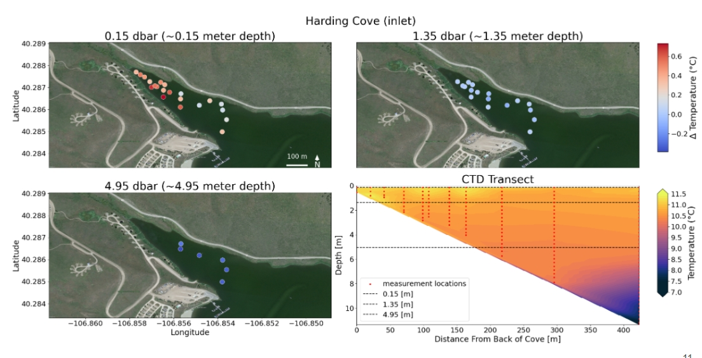
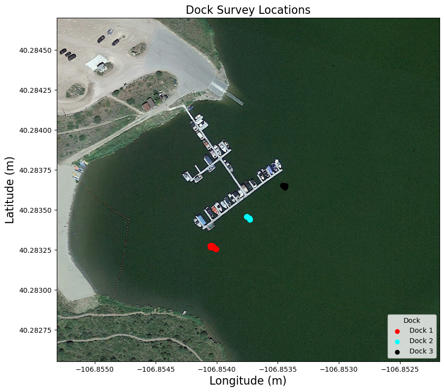
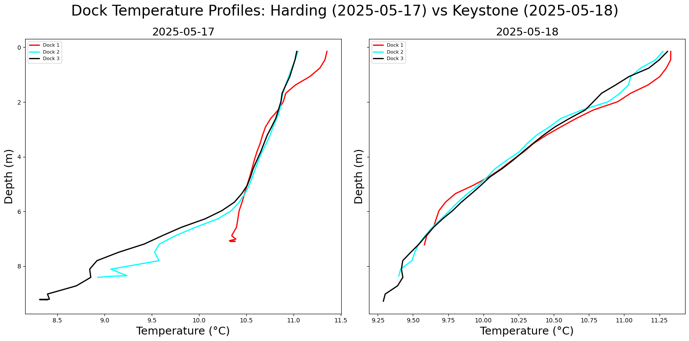

Results and Discussion#
Interactive Map#
This interactive map visualizes the spatial distribution of field data collected across various locations in Stagecoach Reservoir. Using Folium, the map plots the positions of both point and cast measurements, color-coded according to the area (e.g., Dock, Harding Cove, Morrison Cove) as defined by the area_colors dictionary. Each marker on the map corresponds to a data point, and when clicked, it opens a popup displaying detailed information such as temperature, conductivity, salinity, and density. For cast measurements, associated images are also embedded in the popups, allowing users to visualize the physical environment where data was collected. This setup offers an intuitive way to explore and interpret geophysical data in a geographic context.
The map also includes a legend that helps users easily identify the different areas represented by the color coding. Although the map currently defaults to showing all data, it is designed to be interactive, with potential filters (such as a date picker or toggle button) to refine the data visualization. The map is saved as an HTML file and can be accessed or embedded for further analysis. This tool is essential for understanding the spatial patterns of environmental measurements across Stagecoach Reservoir.
Figure 1: Interactive map of Stagecoach Reservoir displaying point and cast measurements with detailed popups.
We used the interactive map to explore temperature variations across Stagecoach Reservoir, particularly focusing on two areas with contrasting characteristics: Keystone Cove, which lacks an inlet, and Harding Cove, which has an inlet. As we examined the data, we noticed significant differences in both temperature and conductivity between the two cove areas. Harding Cove, with its inlet, displayed more variable temperature and conductivity profiles, while Keystone Cove, without an inlet, exhibited more consistent stratification. These observations prompted us to investigate further how conductivity and temperature contribute to the overall density of the water, as density plays a critical role in the circulation of water. This led us to delve deeper into the relationship between temperature, conductivity, and density, particularly with respect to how they might influence water movement within the reservoir.
Density Analysis - Temperature vs Conductivity#
In our analysis, we focused on the equation of state for density in freshwater, using total dissolved solids (TDS) as a key variable. We looked at whether conductivity — a proxy for how much is dissolved in the water — makes a big difference in density at all. This plot shows that, at a typical lake temperature like 11.15°C, even a wide range of conductivities hardly changes the density at all. That’s why we decided to focus on temperature as the primary driver of circulation in this system.

Figure 2: Impact of specific conductance and temperature on freshwater density (TDS).
This provided a strong motivation to investigate how temperature varied specifically in Keystone Cove and Harding Cove, as these coves presented an interesting contrast in conductivity and temperature. We hypothesized that the differences in temperature due to the presence of an inlet could significantly affect water density and circulation patterns. The variability in temperature across the two coves suggested distinct hydrodynamic behaviors, with potential implications for the mixing and stratification of water in Stagecoach Reservoir.
Spatial Variation of Temperature at Harding and Keystone Coves#
To explore these behaviors, we created isobath plots using temperature values at specific pressures (0.15, 0.75, and 1.35 dbar). In addition, we generated transect temperature plots, where we applied lines of best fit through the center of each cove.

Figure 3:Temperature transects and line of best fit for both coves.These plots revealed significant differences between the two coves in terms of their temperature profiles. Keystone Cove exhibited a more stratified water column, with uniform horizontal temperature layers which decrease as depth increased, suggesting a stable, stratified structure.

Figure 4: Temperature transect plot and isobath plots at 0.15, 0.75, and 1.35 dbar for Keystone Cove.
In contrast, Harding Cove displayed more temperature variability, especially near the inlet, with warmer pockets near the surface and below cooler layers. A sharp transition to cooler water was observed around 6 meters, indicating a more dynamic and potentially mixed water column.

Figure 5: Temperature transect plot and isobath plots at 0.15, 0.75, and 1.35 dbar for Harding Cove.
Additionally, we compared the temperature profiles at the dock on two separate days when the coves were surveyed, and the results highlighted how the entire water column in Harding Cove displayed a greater degree of variability in temperature compared to the more stratified temperature profile of Keystone Cove.
Dock Profiles#

Figure 6: Map of dock locations in Stagecoach Reservoir where temperature profiles were measured.
When we compared the dock measurements from May 17th (Harding) and May 18th (Keystone), we observed that the water column at the lake was highly stratified, particularly during periods of different temporal weather conditions.

Figure 7: Temperature profiles for the docks on May 17th (Harding) and May 18th (Keystone), showing stratification differences.
These stratification patterns are influenced the way the water circulated and mixed temporally resulting in noticeable differences between the two dates. Weather conditions, such as wind patterns and temperature fluctuations, could have played a significant role in determining how deep water layers mixed or remained isolated. The stratification in the water column at different times underscores the importance of temporal factors in water dynamics.
These results demonstrate distinctly different behaviors between Keystone Cove and Harding Cove, which we attribute to the presence or absence of an inlet in each cove. The presence of an inlet in Harding Cove causes more variability in water temperature and conductivity, leading to a more mixed water column, while Keystone Cove, without an inlet, shows more stable stratification. This variability in temperature and circulation dynamics suggests that the inlet plays a critical role in shaping the hydrodynamics of the reservoir. Future research should focus on these dynamics, especially regarding how the inlet influences the mixing, temperature distribution, and circulation patterns in these coves. Understanding these differences will be crucial for managing water quality and ecosystem health in the reservoir, as well as for predicting how water circulation may respond to environmental changes, such as shifts in nutrient levels or climate conditions. Further investigation into the influence of inlets on water dynamics could provide valuable insights into the broader hydrological processes within Stagecoach Reservoir and similar water bodies.
Future Work#
Geochemical Sampling: Collaborate with the Geology Department to conduct geochemical sampling in the Stagecoach area.
Surveying Structure: Develop a structure for daily surveys of different areas of Stagecoach, focusing on measuring inflows.
Weather Station: Explore the possibility of setting up a portable weather station to track environmental conditions.
Website Integration: Utilize the project website to track when, where, how, and why data is being collected for proper documentation and analysis.
Deliverables#
Final Presentation Zoom and Recording